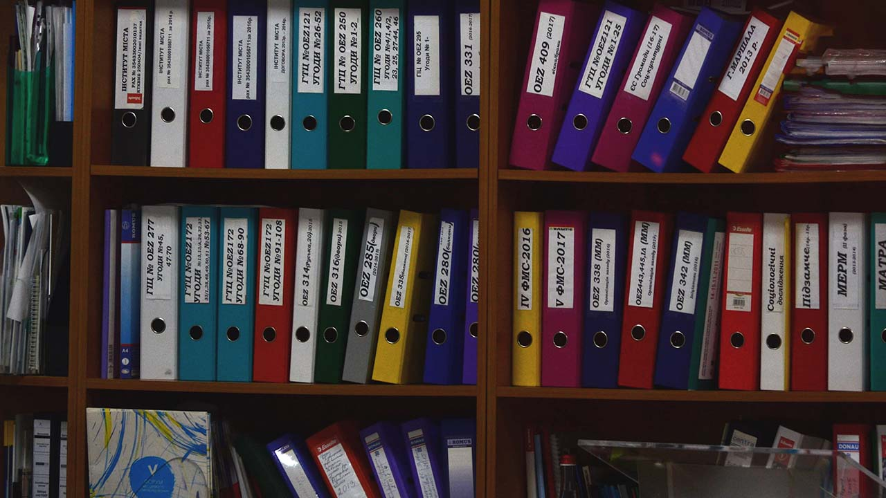
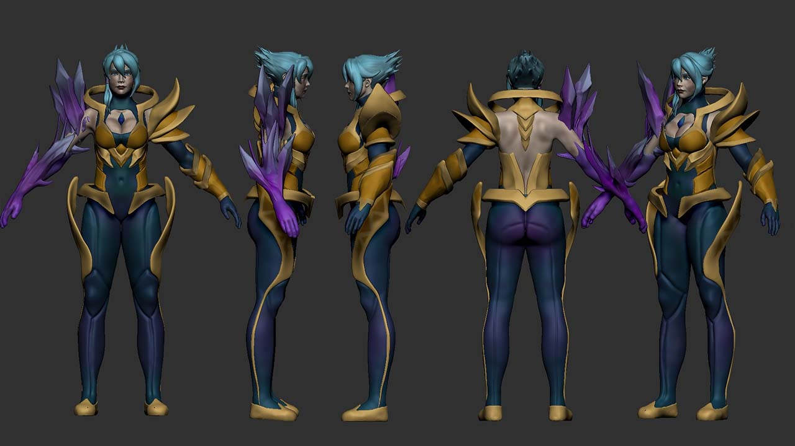
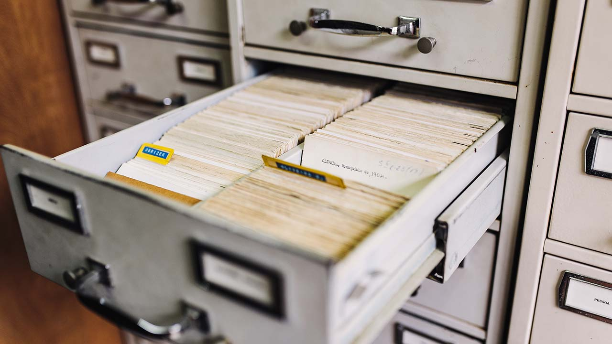
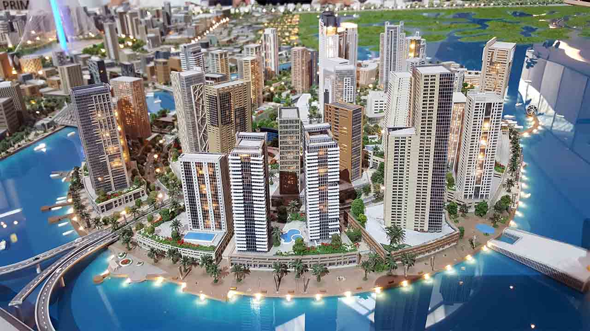

Etape 1 :
L'histoire est l'un des éléments les plus important d'un film. Lorsqu’on écrit une histoire, on peut l’inventer complètement ou s’inspirer de la littérature, de la BD en l’adaptant. Si on utilise cette méthode, il faut faire attention à bien respecter les copyrights de l'auteur de l'histoire et obtenir leur autorisation. Il est également important de déterminer le genre de l’histoire : est-ce une comédie, une histoire d'horreur, une histoire de science-fiction, … ? Ainsi, il faut créer une bible littéraire. Il s’agit d’un document qui regroupe toute les informations sur l’univers et l’histoire du film, ainsi un résumé physique et psychologique de chaque personnages (âge, caractère, ses hobby...)
Etape 2 :
Pour que les spectateurs s'identifient aux personnages, ces derniers doivent sembler "réels", comme par exemple des personnes ou des animaux, et bien s'intégrer à l'histoire. Les personnages animés ne sont pas toujours des personnes, mais peuvent être également des objets qui parlent / qui bougent. Il est important qu'ils aient une apparence et des gestes reconnaissables, ce qui les rendront crédibles, ainsi qu’une manière de s'exprimer et de se déplacer. Ainsi, il faut dessiner les personnages en 2D sous toutes ses angles, qu’ils soient allongé, debout, à genoux mais aussi toutes ses humeurs: heureux, triste, en colère. Tout cela pour que le dessin des personnages en volume dans l’animation reflète leurs personnalités.

Etape 3 :

La modélisation 3D :
Modéliser les personnages en 3D grâce au croquis réalisé en 2D, mais attention les couleurs ne leurs sont pas encore appliqué cela arrivera plus tard lors de la réalisation du film.
Etape 4 :
Créer les textures. Comme avec la modélisation 3D les textures sont d’abord créer sur papier puis adapté sur ordinateurs.
Etape 5 :
Faire une recherche de documentation. Cela va servir à bien modéliser les différents objets présent en 3D dans les scènes. Pour les bâtiments, les personnes chargées de modéliser les lieux sont aidés par des d’architectes pour que les décors soit le plus fidèle possible à la réalité.
Etape 6 :
Création du story-board, une une représentation visuelle de ce que sera le film et qui prend la forme de différents croquis.
La meilleure façon de décrire le storyboard est d'imaginer une sorte de bande dessinée, dans laquelle les séquences d'images représentent toute l'histoire de façon visuelle. Dans le storyboard, nous montrons quel genre de plan et de cadrage nous avons l'intention d'utiliser pour chaque plan, et le format du film. Cela va permettre aux monteurs de faire une animatic (1ère version du film mais uniquement avec les dessins réalisé sur papier afin d’avoir un premier rendu du film).
Exemple d'une animatic disponible sur Youtube pour le clip Gorillaz - Clint Eastwood
Etape 7 :
Créer les scènes en 3D. Grâce à l’animatic l’équipe chargée de faire le film d’animation connaît les différents plans de la caméra et peuvent ainsi commencer à modéliser les différent point de vue.
Etape 8 :
Pour réaliser un film d’animation, il faut un endroit qui servira de studio, des éclairages, un logiciel de capture, ... La raison pour laquelle on utilise des lumières artificielles pendant le tournage est que cela nous permet de contrôler précisément la quantité de lumière. C’est pour cela qu’il faut ajouter une ambiance lumineuse. Une fois l’animation fini et les différentes textures appliquées c’est au tour de la lumière. Celle-ci va s’adapter au différents lieux (plus sombre, plus claire, plus terne…) afin de faire ressortir le personnage et ainsi créer des ombres, des reflets et donner du relief à la scène.

Etape 9 :

La post-production des sons est la phase durant laquelle on ajoute la musique et les bruitages. Ainsi l’un des dernier travail à réaliser va être de donner une voix à tous ces personnages. C’est également lors de cette étape qu’il va falloir ajouter des effets sonores, de la musique ou du bruitage, normalement indiqués dans le story-board. Les sons aident à créer l'atmosphère du film et ajoutent beaucoup d'émotions. C’est une partie très importante du film et il aide à rendre le tout "réel" et contient également des informations que le public ne peut voir à l'écran, comme des sons d'animaux, de voitures, d'eau ou de vent.
Etape 10 :
Montage du film. La dernière étape va être le montage finale du film. Il va falloir faire concorder les voix tourner précédemment avec l’animation pour pouvoir avoir le film enfin terminé. Ce dernier est constitué de photographies (frames ou images), alors il faut expérimenter par exemple on peut doubler ou tripler certaines images pour influencer la fluidité des mouvements. Le montage crée la dynamique finale du film avec le rythme des changements entre les plans et les scènes et avec l’assemblage de tous les éléments.